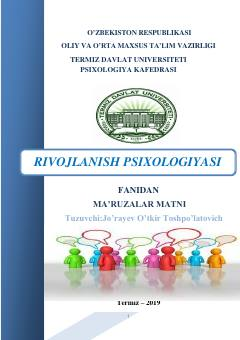

RPRivojlanish va yosh davrlari psixologiyasi bo'yicha ma'ruzalar matni.
Ushbu ma'ruzalar matnida rivojlanish va yosh davrlari psixologiyasining predmeti, nazariy hamda amaliy vazifalari batafsil yoritilgan. Unda inson hayot yo'lining turli bosqichlaridagi psixologik xususiyatlar va psixik rivojlanish omillari tahlil qilinadi.